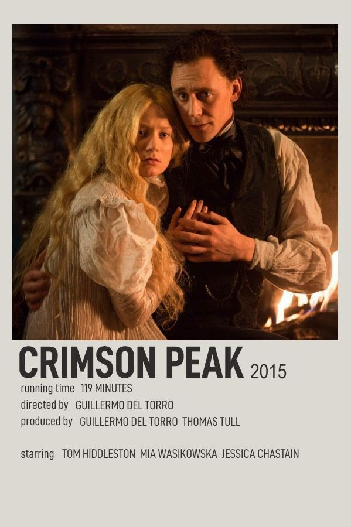
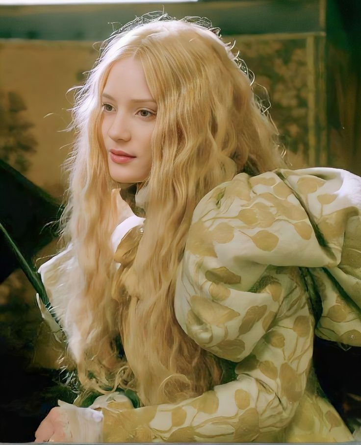
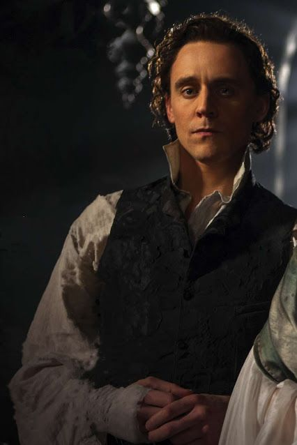
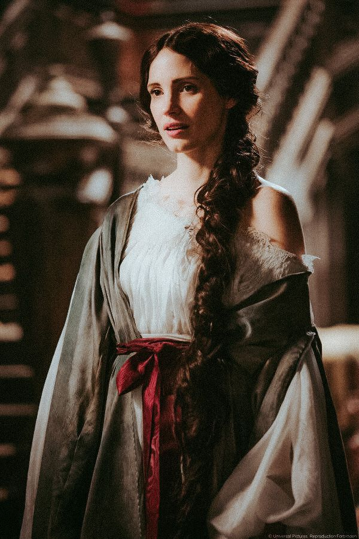
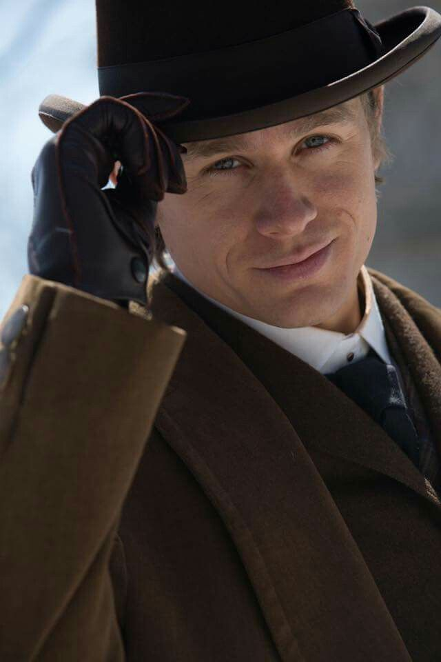

Crimson Peak (2015) é um filme de terror e romance gótico dirigido por Guillermo del Toro e escrito por ele em parceria com Matthew Robbins. Estrelado por Mia Wasikowska, Tom Hiddleston, Jessica Chastain, Charlie Hunnam e Jim Beaver, o longa acompanha uma escritora na Inglaterra vitoriana que se muda para uma mansão isolada e precisa desvendar os mistérios por trás das visões fantasmagóricas do local.
Escrito originalmente em 2006 e vendido para a Universal Pictures, o projeto sofreu atrasos de produção até ser filmado em Ontario entre fevereiro e maio de 2014, sob a produção da Legendary Pictures e da Double Dare You. Inspirado por clássicos como O Iluminado, A Casa Assombrada e Os Inocentes, o filme estreou no Fantastic Fest em setembro de 2015 e chegou aos cinemas em outubro do mesmo ano. Apesar de ter um desempenho modesto na bilheteria — arrecadando US$ 74 milhões mundialmente —, a obra recebeu críticas amplamente positivas e conquistou diversos prêmios, incluindo o Saturn Award de Melhor Filme de Terror, Melhor Atriz Coadjuvante (Jessica Chastain) e Melhor Direção de Arte.
Em 1901, a herdeira e escritora Edith Cushing se casa com o aristocrata britânico Sir Thomas Sharpe após o assassinato brutal de seu pai. Ela se muda com Thomas e a irmã dele, Lucille, para Allerdale Hall — uma mansão decadente em Cumberland conhecida como "Pico Carmesim".
Na mansão, Edith passa a ser atormentada por fantasmas e adoece devido a um chá envenenado oferecido por Lucille. Ao investigar o local, Edith descobre segredos sombrios:
O amigo de infância de Edith, Dr. Alan McMichael, descobre a verdade sobre o passado dos irmãos e vai ao resgate da jovem. Thomas, que acabou se apaixonando de verdade por Edith, tenta protegê-la e confronta a irmã, mas acaba morto por Lucille em um acesso de fúria. Edith mata Lucille em legítima defesa com a ajuda do fantasma de Thomas e é resgatada por Alan, transformando mais tarde suas experiências no romance Crimson Peak.

Edith Cushing (interpretada por Mia Wasikowska): Uma jovem escritora americana, inteligente e independente, que consegue ver fantasmas desde a infância. Ela se apaixona por Thomas Sharpe e se muda com ele para a Inglaterra

Sir Thomas Sharpe (interpretado por Tom Hiddleston): Um aristocrata inglês carismático, inventor e empobrecido que busca financiamento para suas máquinas e acaba se envolvendo com Edith.

Lady Lucille Sharpe (interpretada por Jessica Chastain): A irmã fria, possessiva e enigmática de Thomas, que esconde segredos sombrios na mansão da família.

Dr. Alan McMichael (interpretado por Charlie Hunnam): Um médico oftalmologista amigo de infância de Edith, apaixonado por ela, que tenta protegê-la e investiga os perigos que ela corre.